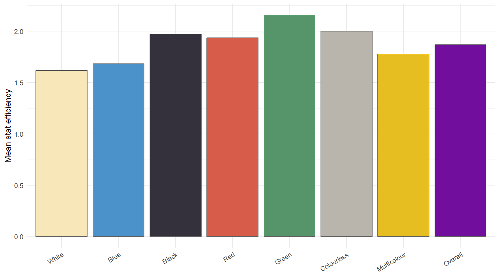
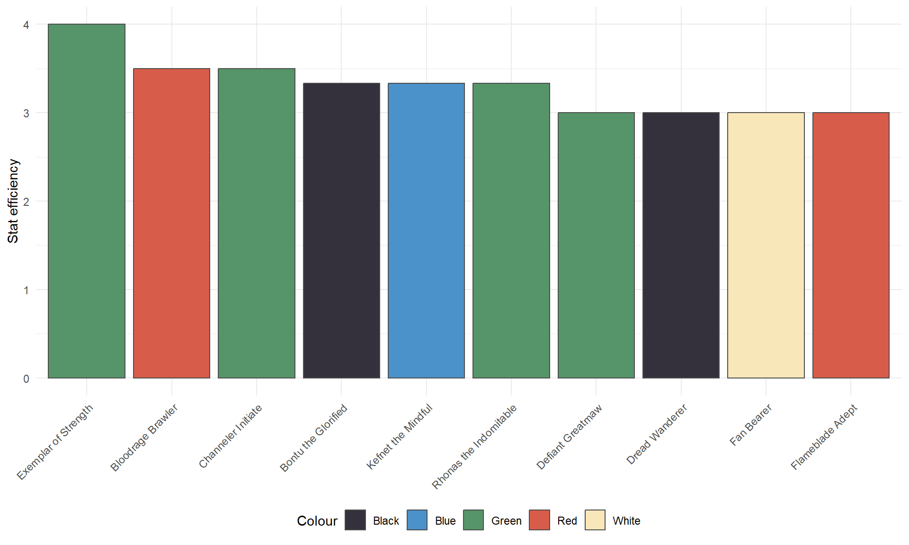

#one time download
#run manually from the repository root, normal renders use saved file
data_url <- "https://mtgjson.com/api/v5/AKH.json"
data_file <- "data/AKH.json"
if (!file.exists(data_file)) {
dir.create("data", showWarnings = FALSE)
download.file(data_url, data_file, mode = "wb")
} else {
message("Using the existing snapshot: ", data_file)}R deck wins
MTG
Amonkhet
R
Creature stats, mana costs, and colours in Amonkhet.
As an example of what can be done with R inside of a Quarto website, I’ll be accessing, working with, and analyzing freely licensed data from Amonkhet, one of my favourite Magic the Gathering sets. To start, make sure you have the data, and load it into R:
Data: MTGJSON’s Amonkhet dataset, using the saved snapshot dated September 22, 2026, published under the MIT licence. The project README covers setup, rendering, and running cells interactively. The download chunk below is skipped during rendering; see the manual download instructions.
#read file
payload <- jsonlite::fromJSON("data/AKH.json")
cards <- payload$data$cards
# Preview six rows without expanding the nested JSON columns.
head(cards[c("name", "manaValue", "power", "toughness", "rarity")], 6) name manaValue power toughness rarity
1 Angel of Sanctions 5 3 4 mythic
2 Anointed Procession 4 <NA> <NA> rare
3 Anointer Priest 2 1 3 common
4 Approach of the Second Sun 7 <NA> <NA> rare
5 Aven Mindcensor 3 2 1 rare
6 Binding Mummy 2 2 2 commonI prefer working with CSV over JSON, so let’s change that real quick -
#prepare csv-friendly dataframe by unwrapping the JSON
scalars <- c("name", "manaValue", "power", "toughness", "rarity", "text", "edhrecRank", "isReprint")
lists <- c("colors", "types", "subtypes", "keywords") #the lists need to be parsed in CSV
flat_cards <- cards[c(scalars, lists)] #create the dataframe to write
# MTGJSON omits this flag for non-reprints; export an explicit FALSE.
flat_cards$isReprint[is.na(flat_cards$isReprint)] <- FALSE
#combine these into a single value delimited with ";" for lists to differentiate from commas
for (field in lists) {
flat_cards[[field]] <- vapply(flat_cards[[field]],
function(values) paste(values, collapse = ";"), character(1))
}
write.csv(flat_cards, "data/akh_cards.csv", row.names = FALSE, fileEncoding = "UTF-8")What colour looks strongest?
As a quick measure, without actually trying any of the cards, we can look at the ‘rate’ on each creature in the set. There are a lot of rules and abilities going on in this game, so it’s a simplistic analysis, but might give good results. To do this, we will sum their ‘power’ and ‘toughness’ and compare it to their cost. Then, we can group by colour to see who has the best rate.
library(dplyr)
library(ggplot2)
creatures <- flat_cards |>
filter(grepl("Creature", types)) |>
distinct(name, .keep_all = TRUE) |> # count each card once, not each printing
mutate(
# Variable stats such as "*" become NA and are excluded below.
power = suppressWarnings(as.numeric(power)),
toughness = suppressWarnings(as.numeric(toughness)),
efficiency = (power + toughness) / pmax(manaValue, 1), #to avoid dividing by 0, we set divide these by 1, the earliest turn they can be played
colour = case_when(
colors == "W" ~ "White",
colors == "U" ~ "Blue",
colors == "B" ~ "Black",
colors == "R" ~ "Red",
colors == "G" ~ "Green",
colors == "" ~ "Colourless",
TRUE ~ "Multicolour"
)
) |>
filter(!is.na(efficiency))
# Use the same colours for both charts; Overall gets a neutral fill.
colour_palette <- c(
White = "#F8E7B9", Blue = "#4B91CA", Black = "#35313C",
Red = "#D85C4A", Green = "#559569", Colourless = "#B9B5AC",
Multicolour = "#e6be21", Overall = "#720e9d"
)I define efficiency as power plus toughness divided by mana value, treating a cost of zero as one for this comparison. Each card is counted once, and creatures with nonnumeric stats are left out. Multicoloured creatures have their own group, and the Gods stay in the analysis.
Average efficiency by colour
colour_summary <- creatures |>
group_by(colour) |>
summarise(mean_efficiency = mean(efficiency), .groups = "drop")
# Overall is the mean across cards, not the mean of the group means.
colour_summary <- colour_summary |>
bind_rows(summarise(creatures,
colour = "Overall", mean_efficiency = mean(efficiency))) |>
mutate(colour = factor(colour, levels = names(colour_palette)))
ggplot(colour_summary, aes(x = colour, y = mean_efficiency, fill = colour)) +
geom_col(colour = "grey30", show.legend = FALSE) +
scale_fill_manual(values = colour_palette) +
labs(x = NULL, y = "Mean stat efficiency") +
theme_minimal() +
theme(axis.text.x = element_text(angle = 30, hjust = 1))
The ten most efficient creatures
For this chart, I sort by efficiency and then by name to break ties, keeping exactly ten cards. This score compares printed stats with cost; it does not account for abilities or restrictions.
top_creatures <- creatures |>
arrange(desc(efficiency), name) |>
slice_head(n = 10) |>
mutate(name = factor(name, levels = name)) # keep this order on the x-axis
ggplot(top_creatures, aes(x = name, y = efficiency, fill = colour)) +
geom_col(colour = "grey30") +
scale_fill_manual(values = colour_palette) +
labs(x = NULL, y = "Stat efficiency", fill = "Colour") +
theme_minimal() +
theme(
axis.text.x = element_text(angle = 45, hjust = 1),
legend.position = "bottom"
)
Green has the highest stats-per-cost, which fits their identity of being creature-based. Among single-colour groups, black is second, with white being the least efficient. Looking at individual cards, green still has the top spot, with Exemplar of Strength. This is a little misleading, though: it gives one of your creatures -3/-3 when you play it, meaning it’s actually closer to a 1/1 for 2 than a 4/4. Second place, Bloodrage Brawler, costs a card. Third place, Channeler Initiate, and seventh, Defiant Greatmaw, also make another creature smaller in exchange. The next 3 are mythic rare cards with conditions on whether they can be used in combat. This may not be a great measure of how good a card is because of the added complexity, but we do see one interesting standout here: Dread Wanderer is cheap and efficient, has a very slight downside and is replayable once it dies. It ended up being second among AKH cards by copies in the article’s Pro Tour Amonkhet Day Two table. This doesn’t validate the efficiency measure as a whole, as other sets are included in that environment, and other features such as the aforementioned abilities or its type (Zombie) could be more impactful on the performance.
A little tournament context
For a quick look back at Standard, here are the five most-played AKH cards from each article’s published card table, ordered by copies. These are historical highlights: the articles cover different deck samples, and card counts measure usage rather than win rates. For brevity, we only looked at creatures here, and most of these cards aren’t creatures, but these demonstrate what happened to be good in the context of the actual environment they were played in.
Pro Tour Amonkhet
Source: SaffronOlive, Pro Tour Amonkhet: By the Numbers, MTGGoldfish, May 15, 2017. The counts below come from the article’s Amonkhet-only table for Day Two.
| AKH card | Copies in Day Two decks |
|---|---|
| Liliana’s Mastery | 228 |
| Dread Wanderer | 224 |
| Magma Spray | 220 |
| Lord of the Accursed | 212 |
| Dispossess | 160 |
Pro Tour Hour of Devastation (the set following, also set on Amonkhet)
Source: SaffronOlive, Pro Tour Hour of Devastation: By the Numbers, MTGGoldfish, July 31, 2017. These are the AKH cards in the article’s overall top-20 table; counts refer to its deck sample.
| AKH card | Copies in sample | Decks containing card |
|---|---|---|
| Magma Spray | 168 | 58 |
| Sunscorched Desert | 164 | 41 |
| Ahn-Crop Crasher | 156 | 39 |
| Glorybringer | 135 | 52 |
| Hazoret the Fervent | 114 | 39 |